Introduction
Part 1 of this series explored the applications of absorbing Markov chains in the context of a simple perfect maze. This part of the series will expand on the simple maze in various ways and explore how these changes affect interpretations of the different metrics offered in the samc package.
The complete code for this series is available on Github.
Setup
Part 2 reuses the code from Part 1.
Fidelity
The first change explored in this part will be the incorporation of
fidelity into the samc object. In Part 1, transitions always occurred
from one cell to a different neighboring cell. With fidelity,
transitions can occur from a cell to itself; essentially, there’s no
movement during a time step. There are potentially many different ways
that fidelity could be applied to the maze, but for simplicity, this
example will keep things simple by using it to create a delay in
movement at intersections. The goal is to model “hesitation” when an
individual is presented with the choice of three or more paths. For
additional simplicity, all intersections will be treated the same and
assigned a fidelity probability of 0.1, which means that
once an individual is at an intersection, there is a 10% probability
that they will stay in the intersection from one time step to the
next.
# Intersections determined using a moving window function
ints_res <- focal(maze_res,
w = matrix(c(NA, 1, NA, 1, 1, 1, NA, 1, NA), nrow = 3, ncol = 3),
fun = function(x) {sum(!is.na(x)) > 3})
ints_res[is.na(maze_res)] <- NA
ints_res <- ints_res * 0.1
plot_maze(ints_res, "Intersections", vir_col)Fidelity changes the matrix underlying the samc object, which means that the samc object has to be recreated:
ints_samc <- samc(maze_res, maze_finish, ints_res, model = rw_model)To start, let’s see how the new fidelity input affects the expected time to finish:
# Original results from Part 1
survival(maze_samc)[maze_origin]
#> [1] 13869
cond_passage(maze_samc, origin = maze_origin, dest = maze_dest)
#> [1] 13868
# Results with fidelity at intersections
survival(ints_samc)[maze_origin]
#> [1] 14356
cond_passage(ints_samc, origin = maze_origin, dest = maze_dest)
#> [1] 14355Intuitively, with “hesitation” added to the movement, the expected
time to finish increases. Also, note that incorporating fidelity in this
particular example does not affect the relationship between
survival() and cond_passage().
In terms of the probability of visiting any particular cell, changing the fidelity does not change the results from Part 1:
ints_disp <- dispersal(ints_samc, origin = maze_origin)
#>
#> Cached diagonal not found.
#> Performing setup. This can take several minutes... Complete.
#> Calculating matrix inverse diagonal...
#> Computing: 100% (done)
#> Complete
#> Diagonal has been cached. Continuing with metric calculation...
all.equal(maze_disp, ints_disp)
#> [1] TRUEFidelity does, however, change the number of times each cell is expected to be visited:
ints_visit <- visitation(ints_samc, origin = maze_origin)
all.equal(maze_visit, ints_visit)
#> [1] "Mean relative difference: 0.03511428"
# Let's plot the difference to see if there is a noticeable pattern
visit_diff <- map(maze_samc, ints_visit) - map(maze_samc, maze_visit)
plot_maze(visit_diff, "Visits Per Cell (Difference)", viridis(256))
With fidelity present, the intersections are seeing a significantly
different number of visits. Since a “visit” effectively represents a
transition to a cell from one time step to the next, the presence of
fidelity means that the metric is counting transitions from a cell to
itself as well. Interestingly, when compared to the figure in Part 1,
the legend in this figure seems to indicate that the increase for the
intersections might be 10%, or the same as the fidelity probabilities.
It also seems like the non-intersections (cells with a fidelity
probability of 0.0) experienced no change. Let’s check
these ideas:
# First, let's see which cells changed.
# Ideally would just use `visit_diff > 0`, but floating point precision issues force an approximation
plot_maze(visit_diff > tolerance, "Visits With Non-Zero Difference", vir_col)
# Second, let's see what the percent change is for our non-zero differences.
visit_perc <- (ints_visit - maze_visit) / maze_visit
visit_perc[visit_perc>tolerance]
#> [1] 0.1111111 0.1111111 0.1111111 0.1111111 0.1111111 0.1111111 0.1111111
#> [8] 0.1111111 0.1111111 0.1111111 0.1111111 0.1111111 0.1111111 0.1111111
#> [15] 0.1111111 0.1111111 0.1111111 0.1111111 0.1111111 0.1111111 0.1111111
#> [22] 0.1111111 0.1111111 0.1111111 0.1111111 0.1111111 0.1111111 0.1111111
#> [29] 0.1111111 0.1111111 0.1111111 0.1111111 0.1111111 0.1111111 0.1111111
#> [36] 0.1111111 0.1111111 0.1111111 0.1111111 0.1111111 0.1111111 0.1111111
#> [43] 0.1111111
It turns out that there is no change in the number of expected visits for non-intersections. It also turns out that our hunch for the intersections was only partially true; the change is constant, but it’s 1/9 instead of 0.1 or 10%.
The most interesting change from incorporating fidelity might be with
the distribution() metric. Recall from Part 1 that there
was an alternating pattern with the cells when changing the time steps.
With fidelity, this effect still exists, but not to the same degree:
ints_dist <- distribution(ints_samc, origin = maze_origin, time = 20)
plot_maze(map(ints_samc, ints_dist), "Location at t=20", viridis(256))
ints_dist <- distribution(ints_samc, origin = maze_origin, time = 21)
plot_maze(map(ints_samc, ints_dist), "Location at t=21", viridis(256))

Given a sufficient amount of time, the cumulative effect of having fidelity present will almost entirely eliminate this pattern. Even from time steps 200-201, the alternating pattern is visually nearly gone:
ints_dist <- distribution(ints_samc, origin = maze_origin, time = 200)
plot_maze(map(ints_samc, ints_dist), "Location at t=200", viridis(256))
ints_dist <- distribution(ints_samc, origin = maze_origin, time = 201)
plot_maze(map(ints_samc, ints_dist), "Location at t=201", viridis(256))
For comparison, here’s the original samc object using the same time steps:
maze_dist <- distribution(maze_samc, origin = maze_origin, time = 200)
plot_maze(map(maze_samc, maze_dist), "Location at t=200", viridis(256))
maze_dist <- distribution(maze_samc, origin = maze_origin, time = 201)
plot_maze(map(maze_samc, maze_dist), "Location at t=201", viridis(256)) 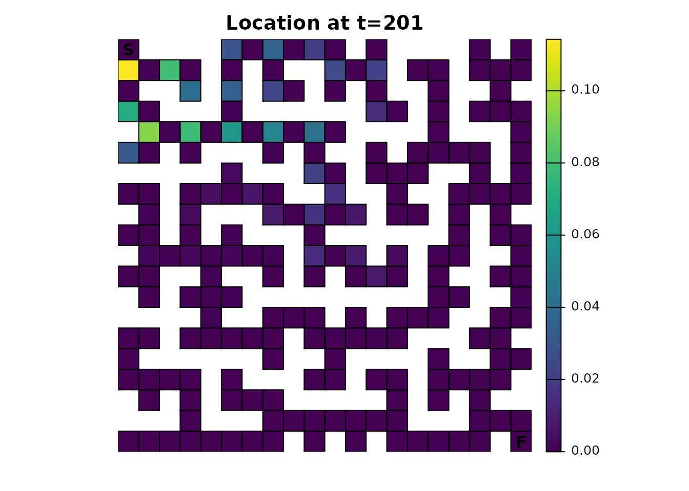
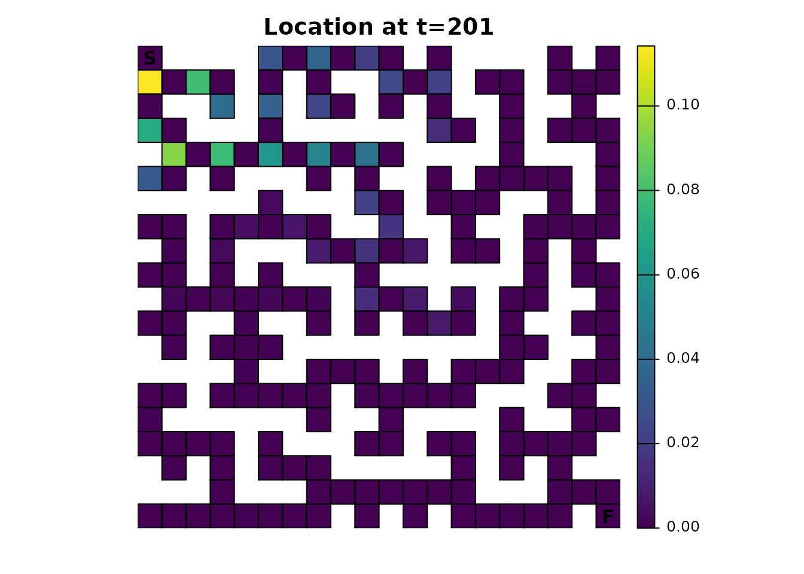
Dead-End Avoidance
Technically, the package doesn’t offer the ability to “look ahead” at
future states to adjust the transition probabilities. In other words, if
a route would eventually lead to a dead end, there’s nothing in the
samc() function or the metric functions to account for that
or model the possibility that an individual in the maze can see down a
hallway. It can, however, be faked somewhat by adjusting the resistance
map so that the dead ends have a much higher resistance. This will
reduce the probability of an individual entering a dead end, almost as
if they looked ahead. A sliding window function can be used to create
this new map:
# Dead ends
ends_res <- focal(maze_res,
w = matrix(c(NA, 1, NA, 1, 1, 1, NA, 1, NA), nrow = 3, ncol = 3),
fun = function(x){sum(!is.na(x)) == 2})
ends_res[is.na(maze_res)] <- NA
ends_res <- ends_res * 9 + 1
ends_res[20, 20] <- 1
plot_maze(ends_res, "Dead Ends", vir_col)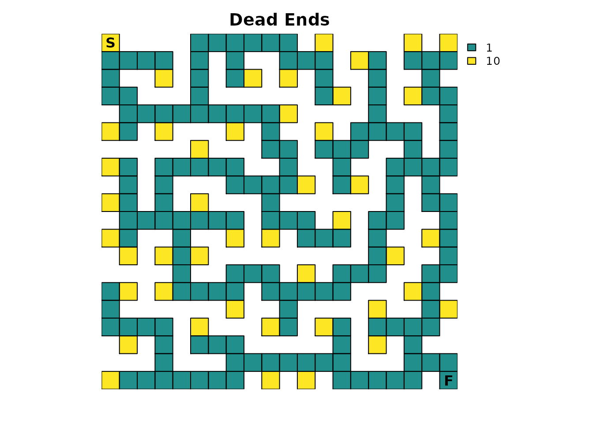
The dead ends have been assigned a resistance value of
10, which is relatively high and means that dead ends will
only rarely be entered. Since the resistance map has been modified, the
samc object will need to be recreated. The fidelity data from the
previous section will not be used, which will allow direct comparisons
against the model created in Part 1.
ends_samc <- samc(ends_res, maze_finish, model = rw_model)Hypothetically, since an individual can now “look ahead”, they should be able to get through the maze faster because they are spending less time in dead ends. This is easily verified:
# Original results from Part 1
survival(maze_samc)[maze_origin]
#> [1] 13869
cond_passage(maze_samc, origin = maze_origin, dest = maze_dest)
#> [1] 13868
# Results with dead ends
survival(ends_samc)[maze_origin]
#> [1] 11313
cond_passage(ends_samc, origin = maze_origin, dest = maze_dest)
#> [1] 11312Since the dead ends have a lower probability of being transitioned
to, the dispersal() and visitation() metrics
should reflect that:
ends_disp <- dispersal(ends_samc, origin = maze_origin)
#>
#> Cached diagonal not found.
#> Performing setup. This can take several minutes... Complete.
#> Calculating matrix inverse diagonal...
#> Computing: 100% (done)
#> Complete
#> Diagonal has been cached. Continuing with metric calculation...
plot_maze(map(maze_samc, ends_disp), "Probability of Visit", viridis(256))
ends_visit <- visitation(ends_samc, origin = maze_origin)
plot_maze(map(maze_samc, ends_visit), "Visits Per Cell", viridis(256))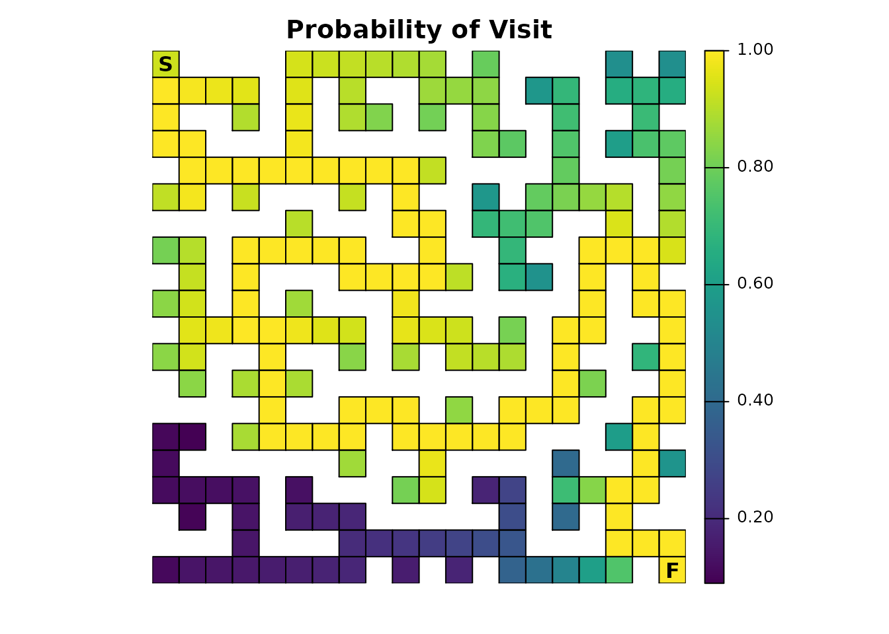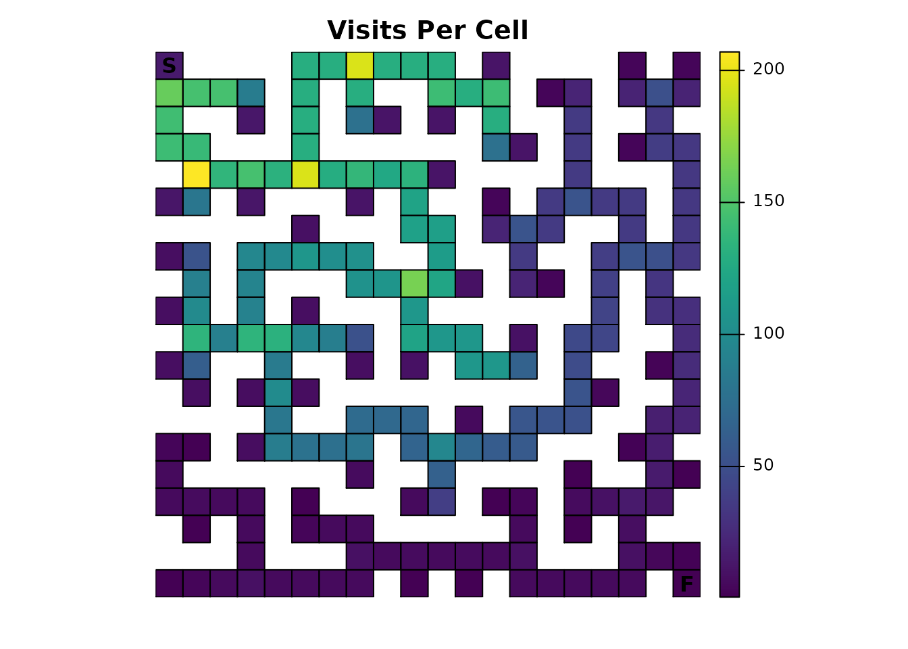
The effect is more obvious with the expected number of visits from
visitation(); the probability illustration is more subtle
compared to the original results in Part 1. This could be explored
similarly to how some of the differences in the fidelity section are
illustrated, an exercise that will be left to interested readers.
Traps
It’s fairly to trivial to add lethal traps to the maze by updating
the absorption input to the samc() function. The key thing
to keep in mind is that the samc() function expects the
total absorption, so it will only be provided a single
absorption input. However, the package can be used to tease apart the
role that different sources of absorption will have in the model. There
are two different approaches to setting this up:
- Start with a single total absorption input. Then take that input and decompose it into multiple absorption components.
- Start with multiple absorption components. Then take those inputs and combine them into a single total absorption input.
The choice depends on the data available and the goals of the project. For example, the first strategy is useful if we’ve somehow measured total absorption for a model and want to explore different hypotheses for how it breaks down into different types of absorption. The second is useful if we already have direct knowledge of different sources of absorption.
This example will take the second approach. One absorption component
has already been created for the finish point. A second simple
absorption component will be created that represents a few traps with a
0.2 or 20% absorption probability:
# Traps absorption layer
maze_traps <- maze_res * 0
maze_traps[17, 3] <- 0.2
maze_traps[1, 9] <- 0.2
maze_traps[6, 20] <- 0.2
plot_maze(maze_traps, "Traps", vir_col)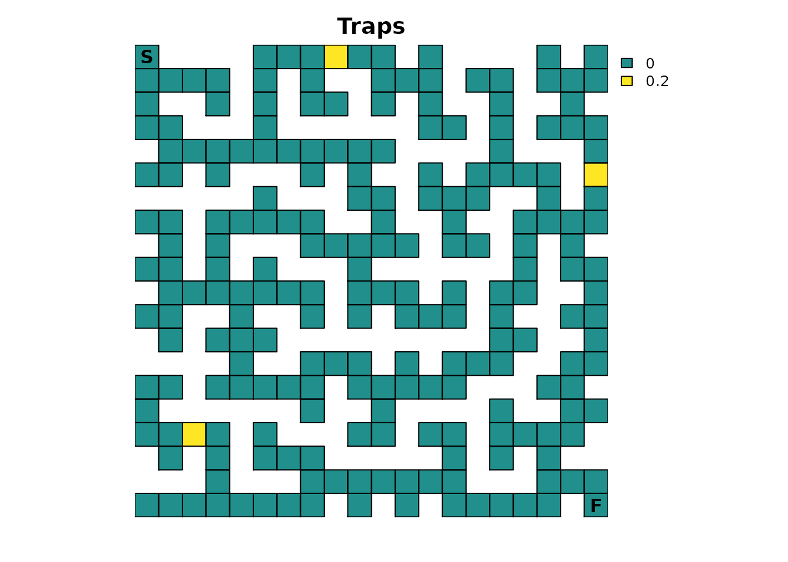
Since the total absorption is the sum of these two components, the samc object will have to be recreated:
maze_abs_total <- maze_finish + maze_traps
traps_samc <- samc(maze_res, maze_abs_total, model = rw_model)For easy comparison, everything else will be kept the same as the original example from Part 1. Continuing the previous strategy, let’s start with determining how long it is expected for an individual to finish the maze:
# Original results from Part 1
survival(maze_samc)[maze_origin]
#> [1] 13869
cond_passage(maze_samc, origin = maze_origin, dest = maze_dest)
#> [1] 13868
# Results with traps
survival(traps_samc)[maze_origin]
#> [1] 1330.26
cond_passage(traps_samc, origin = maze_origin, dest = maze_dest)
#> [1] 3060.207The results are drastically different from what has been seen before.
First, the clear relationship between survival() and
cond_passage() no longer exists. This is because
survival() has a different interpretation in this context
and no longer determines how long it will take to finish; instead, it
now calculates how long it will take an individual to either finish
or be absorbed in one of the traps (i.e., die). This also
drastically changes the plotting results of survival()
(note the change in figure title from Part 1 to reflect the new
interpretation):
traps_surv <- survival(traps_samc)
# Note the updated title from part 1
plot_maze(map(maze_samc, traps_surv), "Expected Time to Absorption", viridis(256))The results are also drastically different from Part 1 when looking at visitation probability and the number of visits:
traps_disp <- dispersal(traps_samc, origin = maze_origin)
#>
#> Cached diagonal not found.
#> Performing setup. This can take several minutes... Complete.
#> Calculating matrix inverse diagonal...
#> Computing: 100% (done)
#> Complete
#> Diagonal has been cached. Continuing with metric calculation...
plot_maze(map(traps_samc, traps_disp), "Probability of Visit", viridis(256))
traps_visit <- visitation(traps_samc, origin = maze_origin)
plot_maze(map(traps_samc, traps_visit), "Visits Per Cell", viridis(256)) 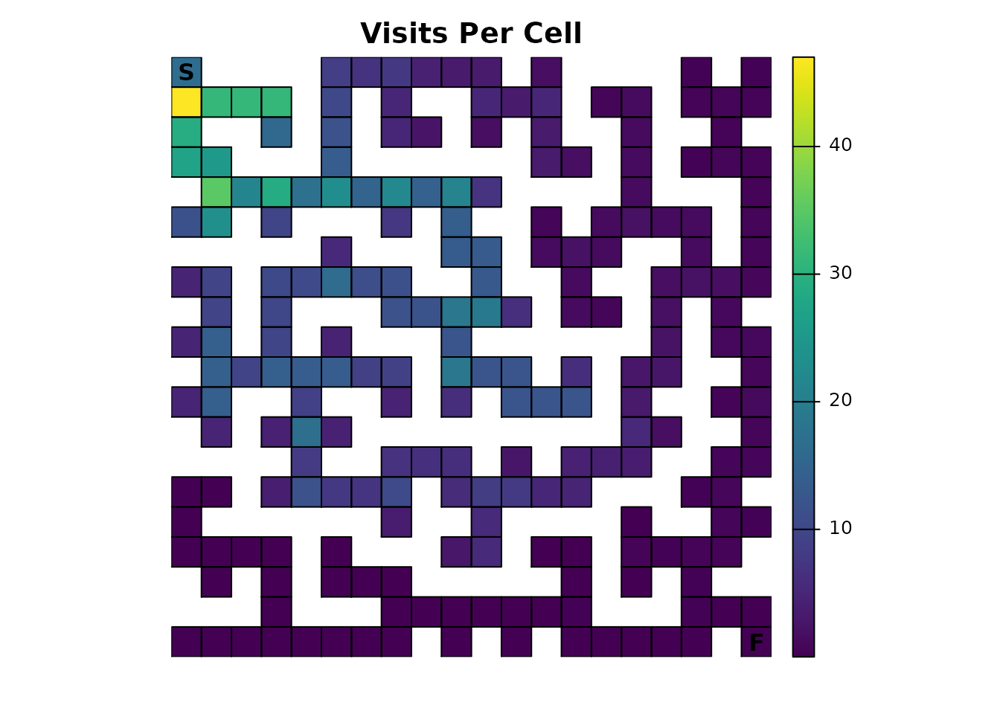
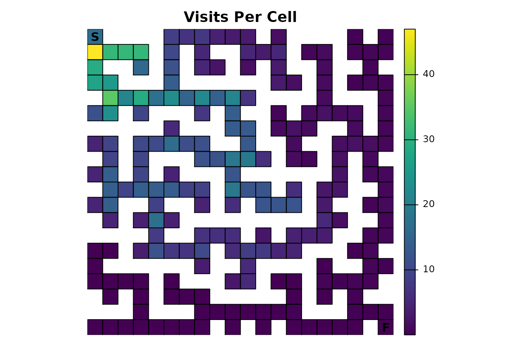
Importantly, the technique in Part 1 of using visitation
probabilities of 1.0 to identify the route through the maze
will not work in this example; it only works in very specialized cases.
The reason is simple: since an individual can now be absorbed in other
locations, there is a non-zero probability that they never reach the
finish, which in turn means the probability of visiting the finish is
now less than 1.0. However, the same technique can be used to see
something interesting:
# Ideally, we would just use `as.numeric(traps_disp == 1)`, but we have floating point precision issues here, so we will approximate it
traps_disp_route <- as.numeric(abs(traps_disp - 1) < tolerance)
plot_maze(map(traps_samc, traps_disp_route), "dispersal() == 1", vir_col)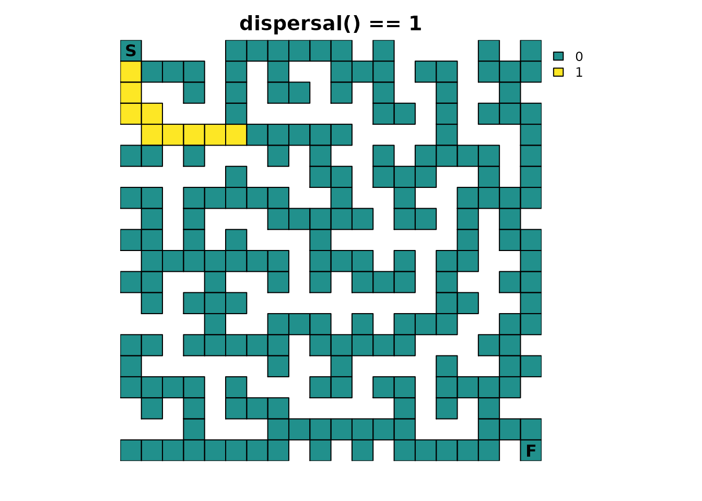
It shows part of the solution observed before, but only up to the first maze intersection that leads to two or more possible sources of absorption.
Additional metrics
The inclusion of multiple absorption states makes the metrics that
were not useful in Part 1 more relevant. Starting with
mortality(), it is possible to visualize where an
individual is expected to be absorbed:
traps_mort <- mortality(traps_samc, origin = maze_origin)
plot_maze(map(traps_samc, traps_mort), "Absorption Probability", viridis(256))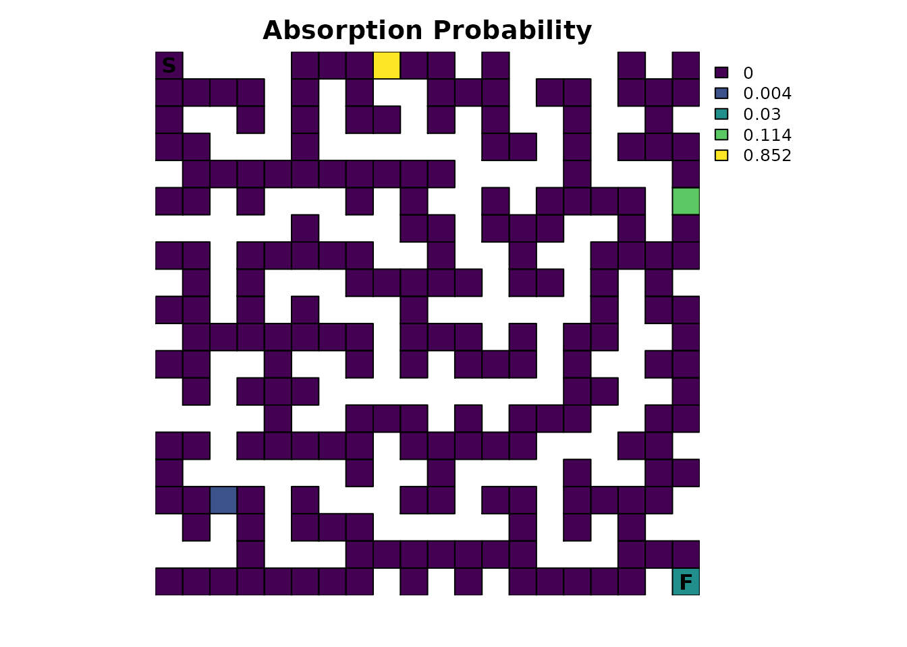
This result is quite possibly unexpected. Why does the finish point
look like it’s 0? Looking at the numbers might provide
insight:
traps_mort[traps_mort > 0]
#> [1] 0.852084306 0.113761093 0.003940915 0.030213685
traps_mort[maze_dest]
#> [1] 0.03021369There’s only a 3.0% chance of an individual finishing the maze! This might seem low given the traps are only lethal 20% of the time, but it makes sense. Recall the Probability of visiting a cell and Visits per cell sections from Part 1; an individual spends most of their time in the early part of the maze. That means they have a lot more exposure to the first trap and, consequently, are more likely to be absorbed there with an 85.2% probability. For the trap farthest from the start, reaching it first requires passing by the finish, so consequently, it has only a 0.39% of being the source of absorption, a substantially lower probability than just finishing the maze.
It is possible to break down the total absorption so that the role of different sources of absorption can be investigated more easily. Now that the samc object has been created, it can be provided the original absorption layers that were used to calculate the total absorption:
# Naming the rasters will make things easier and less prone to user error later
names(maze_finish) <- "Finish"
names(maze_traps) <- "Traps"
traps_samc$abs_states <- c(maze_finish, maze_traps)By doing so, the mortality() metric now returns a list
with information about not just the total absorption, but the individual
components as well. This allows the role of different types of
absorption to be individually accessed and visualized:
traps_mort_dec <- mortality(traps_samc, origin = maze_origin)
str(traps_mort_dec)
#> List of 3
#> $ total : num [1:215] 0 0 0 0 0.852 ...
#> $ Finish: num [1:215] 0 0 0 0 0 0 0 0 0 0 ...
#> $ Traps : num [1:215] 0 0 0 0 0.852 ...
plot_maze(map(traps_samc, traps_mort_dec$Finish), "Absorption Probability (Finish)", viridis(256))
plot_maze(map(traps_samc, traps_mort_dec$Traps), "Absorption Probability (Traps)", viridis(256)) 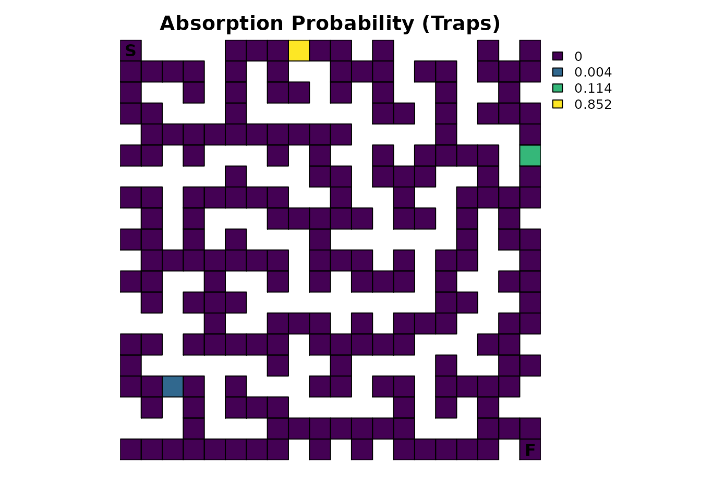
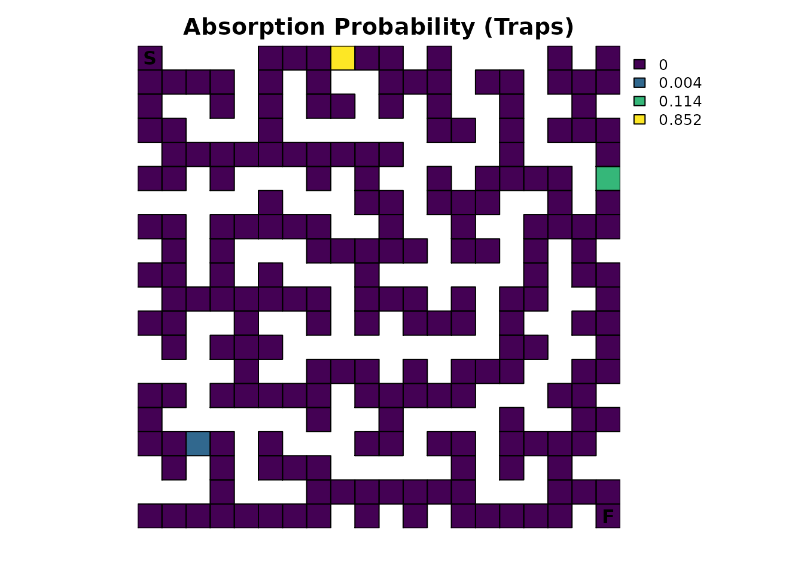
With multiple sources of absorption now specified in the samc object,
the absorption() metric becomes relevant:
absorption(traps_samc, origin = maze_origin)
#> Finish Traps
#> 0.03021369 0.96978631The output from this is quite simple: it is the probability that an
individual will experience a particular type of absorption. As seen
before, there is a 3.0% chance of finishing the maze. But
absorption() also shows that there is a 97.0% total
probability that absorption will occur in one of the three traps. This
is different from the mortality() metric, which calculates
the absorption probabilities at each cell. There is clearly a
relationship between the two metrics, and the advantage of this example
is that it’s easy to see it; it is more difficult to see how the two
metrics are related in more complex situations.